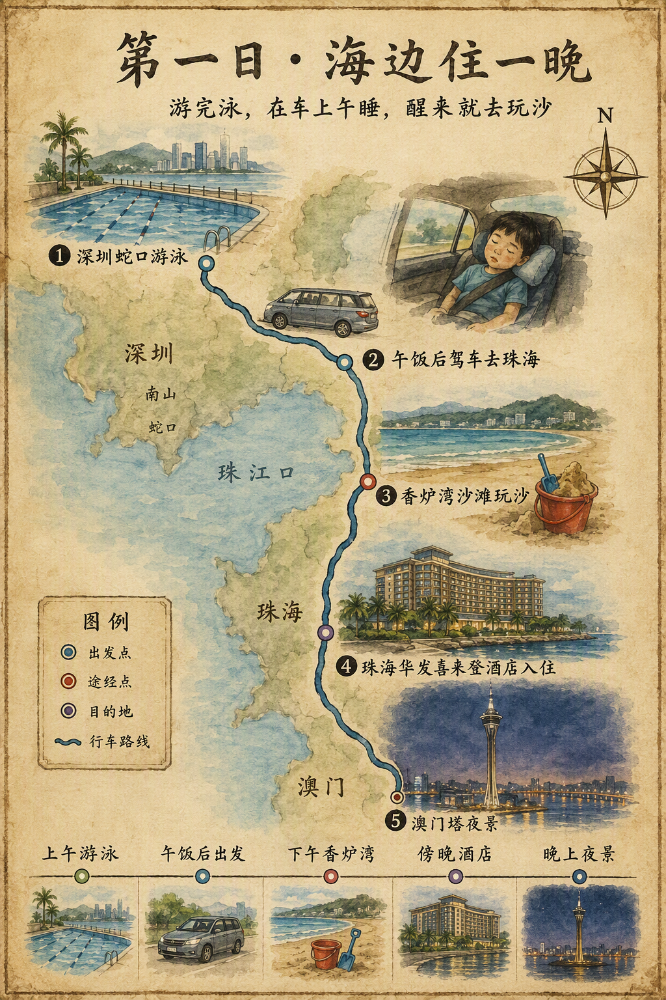

第一天
游完泳，在海边住一晚
让咘咘的午睡发生在车上，把下午最好的时间完整留给香炉湾的沙和海风。

上午蛇口游泳按咘咘状态游完洗澡、换衣服，不压缩整理时间。爷爷奶奶可在附近休息，保持当天开场轻松。
中午蛇口附近午饭后出发去珠海约2小时午饭后上车，咘咘在车上睡午觉；车程就是当天的休息模块，不额外加停靠点。
15:30–16:00香炉湾沙滩约1.5–2小时只做玩沙、坐看海和情侣路短散步。带挖沙玩具、替换衣物、湿巾、帽子与防滑凉鞋；不安排下海游泳。
傍晚珠海华发喜来登酒店住一晚沙滩后再入住，洗掉海沙、安顿行李、吃晚饭。订房时备注澳门景观、高楼层、尽量无遮挡；澳门塔是远景，视房间视野而定。
晚上澳门方向夜景按体力从房间或十字门岸边看澳门天际线与澳门塔。第一天不再赶夜游，早点休息，为第二天留体力。
香炉湾沙滩
香炉湾在情侣路核心海岸，适合把它当作亲子玩沙而不是景点打卡。下午抵达光线和温度更舒服，孩子有明确的沙滩目标，长辈也能在海边坐下看海。沙滩后直接南下入住酒店，避免从酒店向北折返。
珠海华发喜来登酒店
十字门一带是第一晚的休息点，不是继续跑景点的中转站。它与横琴长隆方向衔接较顺，适合让全家洗澡、休息、整理第二天装备；澳门塔和对岸灯火作为房间或岸边的远景收尾即可。